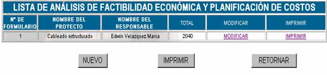
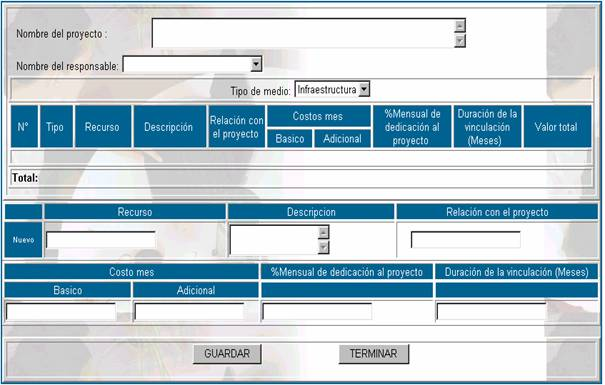
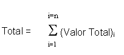

ANÁLISIS DE FACTIBILIDAD
Como se vió anteriormente para realizar la aprobación de cualquier actividad de un proyecto, se debe estimar un costo, para determinar si la actividad es factible económicamente o no, la opción de Análisis de Factibilidad presenta la siguiente pantalla.

No de formulario;
específica el número de análisis de factibilidad económica que se realizó, este número es correlativo y no depende del usuario.Nombre del proyecto; especifica el nombre del proyecto del cual se realizó el análisis de factibilidad económica.
Nombre del responsable; especifica el nombre del responsable de llevar a cabo el análisis de factibilidad económica.
Total; Este dato específica el total en Bs. que se invertirá en el proyecto.
Nuevo; Esta opción permite ingresar los datos del proyecto en términos de recursos, como se muestra en la siguiente pantalla.

Nombre del proyecto;
en este campo se especifica el nombre del proyecto del cual se está realizando el análisis de factibilidad.Nombre del responsable
; en este campo se especifica el nombre del responsable de realiza dicho análisis.Tipo de medio;
en este campo se especifica el tipo de medio que requerirá el proyecto, este puede serRecurso;
en este campo se especifica el nombre del recurso el cual es requerido por el proyecto, por supuesto que este dato debe ir en concordancia con el tipo de medio que se registró.Descripción;
en este campo se anota una descripción completa del recurso que se necesite adquirirRelación con el proyecto;
en este campo se especifica la relación que tiene dicho recurso con el proyecto, para determinar el grado de requerimiento que se tiene de este recurso.Costo básico (mes);
en este campo se anota el costo en Bs. del recurso por un mes de utilización, que se planifica, por ejemplo puede ser el costo de adquisición de un recurso.Costo adicional (mes);
en este campo se anota el costo en Bs. del recurso por un mes de utilización, que no se planifica, es decir por ejemplo en caso de adquirir equipos de computación se tiene un costo adicional de reparaciones no previsto.% Mensual de dedicación al proyecto
; se refiere al grado de utilización del recurso por el proyecto gracias al cual se lo adquirió.Duración de la vinculación (meses);
se refiere al número de meses que el proyecto utilizará el recurso que se adquiera y se deberá registrar en meses.Valor total;
este campo no es modificable por el usuario, debido a que se calcula con la siguiente fórmula:Valor total = (Costo básico + Costo adicional ) x Duración de la vinculación
Es necesario aclarar que este es el valor total del recurso .
Total;
tampoco depende del usuario y se obtiene con la siguiente formula

Donde:
i= Número de recurso
n= Número total de recursos del proyecto
Imprimir; esta opción permite al usuario, ver un reporte completo de todos los recursos que se necesitan para realizar un proyecto.